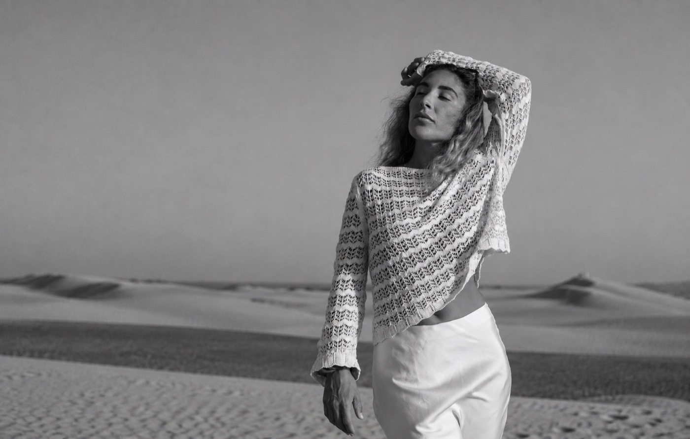
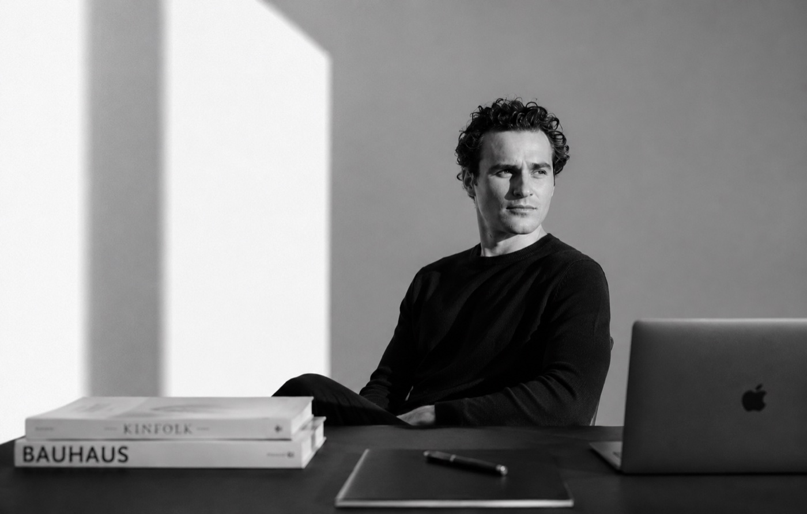

A fresh perspective.
A photography collection for your website, social channels and location listings, including Giggster and Peerspace.
A collection of photographs. A moving portrait. A new website.
One story, made together.

Hi Chandra,
What drew us to Two Palms West was the feeling that someone had cared deeply about every corner. Learning that you shaped the house yourself made us want to know more.
We’re Ninie and Alex, two independent creatives working across photography, film and web design. Your eye for space and your own creative path made us want to reach out.
We can imagine a beautiful project here: fresh photographs, a short film and a new digital home about the place you’ve made. We’re developing this as a self-initiated creative case study during our time in Los Angeles.
A small, cohesive body of work that helps people discover the house, understand its character and find their way to a booking.
A photography collection for your website, social channels and location listings, including Giggster and Peerspace.
A short film that lets visitors experience the light, rhythm and personality of Two Palms West.
A distinctive onepage website that brings the spaces, your story and the booking journey together.
A starting scope for our creative study, shaped together around the house and our shoot plan.
This is a self-initiated case study by Ninie and Alex. We would create the work at no charge and share all finished photographs, the completed film and the website files with you. You would have access to the full collection for your own website, social channels and location listings — including Giggster and Peerspace.
We would also feature the project in our portfolios as a creative study of Two Palms West.
A quiet, human portrait. Gentle movement, tactile details and the sound of a place coming to life.

A door opens. Sunlight moves across the patio. We arrive slowly, with space to notice the textures and shadows.
Sound direction: birds, a door opening, footsteps.
Interactive storyboard using existing reference photographs. The proposed film has not been produced.
White space, sunlit photography and quiet typography. A Mediterranean feeling, with your house at the centre.
The spaces → Chandra’s story → Film → Plan a shoot
Gallery and booking buttons open the existing Two Palms West pages.

Photography & filmFor this project: a sensitive eye for atmosphere, natural movement and the details that make a place its own.
sensesstudio.photography ↗
Web design & creative directionIndividual websites and brand identities, shaped around the character of the people behind them.
webdesign-af.com ↗If this feels like your kind of project, let’s talk.
We can shape the details together.